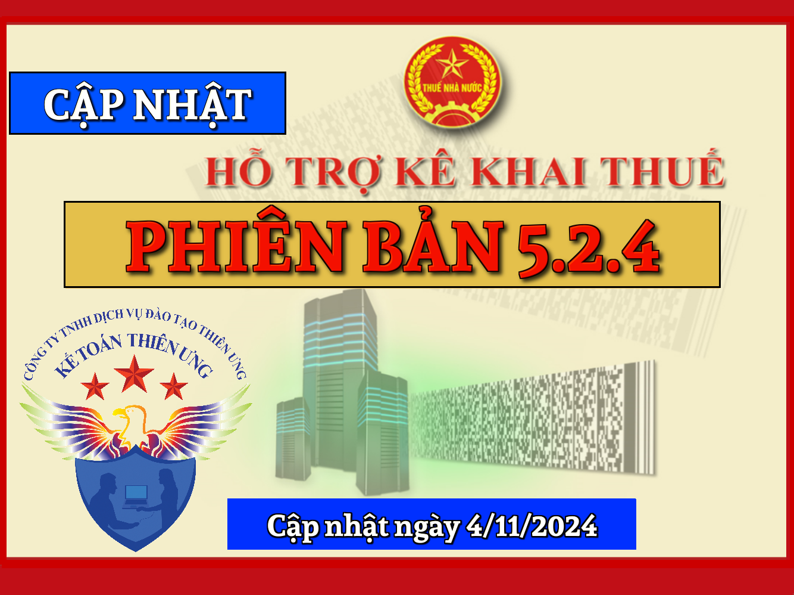
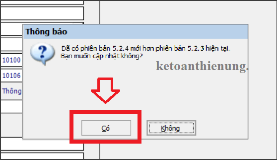
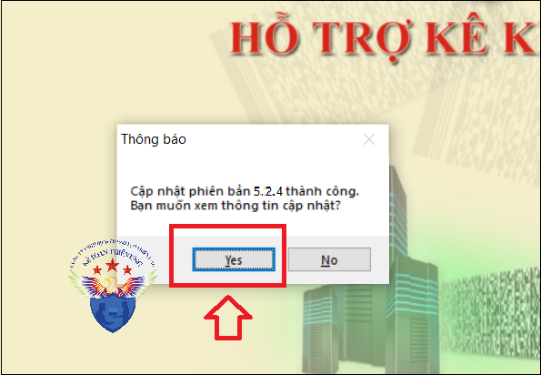

Phần mềm hỗ trợ kê khai thuế HTKK 5.2.4 mới nhất 2024 là Phần mềm HTKK mới nhất ngày 4/11/2024 của Tổng cục thuế. Download phần mềm HTKK 5.2.4 miễn phí tại đây.
Ngày 4/11/2024 Tổng cục Thuế thông báo về việc Nâng cấp ứng dụng Hỗ trợ kê khai (HTKK) 5.2.4
Tổng cục Thuế thông báo nâng cấp ứng dụng Hỗ trợ kê khai (HTKK) phiên bản 5.2.4 đáp ứng Thông tư số 73/2024/TT-BTC quy định mức thu, miễn, chế độ thu, nộp lệ phí cấp, đổi lại thẻ Căn cước công dân; đáp ứng Quyết định số 2351/QĐ-BTC của Bộ Tài Chính về việc đổi tên Chi cục thuế TP Nam Định - Mỹ Lộc; cập nhật địa bàn hành chính các tỉnh Sóc Trăng, Tiền Giang, Tuyên Quang, Thái Bình, Phú Yên, Ninh Thuận, Lào Cai, Khánh Hòa, Gia Lai, Đồng Nai, Đắk Lắk, Cần Thơ, Vĩnh Long, Quảng Ninh đồng thời cập nhật một số nội dung phát sinh trong quá trình triển khai HTKK 5.2.3, cụ thể như sau:
1. Cập nhật danh mục lệ phí trên tờ khai 01/LP (TT80/2021) đáp ứng Thông tư số 73/2024/TT-BTC| Mã phí lệ phí | Tên phí lệ phí | Hiệu lực từ | Hiệu lực đến |
| 27012755 |
Lệ Phí cấp đổi thẻ căn cước công dân sang thẻ căn cước (điểm a khoản 1 Điều 4) |
21/10/2024 | 31/12/2024 |
| 27052755 |
Lệ Phí cấp đổi thẻ căn cước công dân sang thẻ căn cước (điểm b khoản 1 Điều 4) |
21/10/2024 | 31/12/2024 |
| 27052755 |
Lệ Phí cấp lại thẻ căn cước công dân sang thẻ căn cước (điểm c khoản 1 Điều 4) |
21/10/2024 | 31/12/2024 |
| 27022755 |
Lệ Phí cấp đổi thẻ căn cước công dân sang thẻ căn cước trường hợp nộp hồ sơ theo hình thức trực tuyến (điểm a khoản 1 Điều 4) |
01/01/2025 | 31/12/2025 |
| 27032755 | Lệ Phí cấp đổi thẻ căn cước công dân sang thẻ căn cước trường hợp nộp hồ sơ không theo hình thức trực tuyến (điểm a khoản 1 Điều 4) | 01/01/2025 | 31/12/2025 |
| 27062755 |
Lệ Phí cấp đổi thẻ căn cước công dân sang thẻ căn cước trường hợp nộp hồ sơ theo hình thức trực tuyến (điểm b khoản 1 Điều 4) |
01/01/2025 | 31/12/2025 |
| 27072755 | Lệ Phí cấp đổi thẻ căn cước công dân sang thẻ căn cước trường hợp nộp hồ sơ không theo hình thức trực tuyến (điểm b khoản 1 Điều 4) | 01/01/2025 | 31/12/2025 |
| 27102755 |
Lệ Phí cấp lại thẻ căn cước công dân sang thẻ căn cước trường hợp nộp hồ sơ theo hình thức trực tuyến (điểm c khoản 1 Điều 4) |
01/01/2025 | 31/12/2025 |
| 27112755 | Lệ Phí cấp lại thẻ căn cước công dân sang thẻ căn cước trường hợp nộp hồ sơ không theo hình thức trực tuyến (điểm c khoản 1 Điều 4) | 01/01/2025 | 31/12/2025 |
| 27002755 |
Lệ Phí cấp đổi thẻ căn cước công dân sang thẻ căn cước (điểm a khoản 1 Điều 4) |
01/01/2026 | 31/12/9999 |
| 27042755 |
Lệ Phí cấp đổi thẻ căn cước công dân sang thẻ căn cước (điểm b khoản 1 Điều 4) |
01/01/2026 | 31/12/9999 |
| 27082755 |
Lệ Phí cấp lạithẻ căn cước công dân sang thẻ căn cước (điểm c khoản 1 Điều 4) |
01/01/2026 | 31/12/9999 |
2. Đổi tên Chi cục Thuế khu vực thành phố Nam Định – Mỹ Lộc, đáp ứng Nghị quyết số 1106/NQ-UBTVQH15
- Đổi tên "Thành phố Nam Định - Chi cục Thuế khu vực Thành phố Nam Định - Mỹ Lộc" (mã 11301) thành "Chi cục Thuế thành phố Nam Định"
- Hết hiệu lực "Huyện Mỹ Lộc - Chi cục Thuế khu vực Thành phố Nam Định - Mỹ Lộc" (mã 11305)
- Cập nhật địa bàn hành chính thuộc Huyện Sơn Dương, tỉnh Tuyên Quang như sau:
+ Hết hiệu lực Xã Hồng Lạc (mã 2111133)
+ Hết hiệu lực Xã Vân Sơn (mã 2111127)
+ Thêm mới Xã Hồng Sơn (mã 2111171)
- Cập nhật địa bàn hành chính thuộc Thành phố Sóc Trăng, tỉnh Sóc Trăng như sau:
+ Hết hiệu lực Phường 9 (mã 2111133), sáp nhập vào Phường 1 (mã 8190105)
5. Cập nhật địa bàn hành chính tỉnh Tiền Giang đáp ứng Nghị quyết số 1202/NQ-UBTVQH15- Cập nhật địa bàn hành chính thuộc Huyện Châu Thành, tỉnh Tiền Giang như sau:
+ Hết hiệu lực Xã Hữu Đạo (mã 8070733), Xã Dưỡng Điềm (mã 8070729); sáp nhập vào Xã Bình Trưng (8070735)
+ Hết hiệu lực Xã Tân Lý Tây (mã 8070721), sáp nhập vào Thị trấn Tân Hiệp (mã 8070717)
- Cập nhật địa bàn hành chính thuộc Thành phố Mỹ Tho, tỉnh Tiền Giang như sau:
+ Hết hiệu lực Phường 3 (mã 8070103), Phường 8 (mã 8070105); sáp nhập vào Phường 2 (8070119)
+ Hết hiệu lực Phường 7 (mã 8070115), sáp nhập vào Phường 1 (mã 8070117)
- Cập nhật địa bàn hành chính thuộc Huyện Quỳnh Phụ, tỉnh Thái Bình như sau:
+ Thêm mới Xã Trang Bảo Xá (mã 1150379)
+ Hết hiệu lực Xã Quỳnh Bảo (mã 1150321), Xã Quỳnh Trang (mã 1150373), Xã Quỳnh Xá (mã 1150323); sáp nhập vào Xã Trang Bảo Xá (mã 1150379)
- Cập nhật địa bàn hành chính thuộc Huyện Kiến Xương, tỉnh Thái Bình như sau:
+ Thêm mới Xã Thống Nhất (mã 1151385)
+ Thêm mới Xã Hồng Vũ (mã 1151387)
+ Hết hiệu lực Xã Đình Phùng (mã 1151349), Xã Nam Cao (mã 1151347), Xã Thượng Hiền (mã 1151315); sáp nhập vào Xã Thống Nhất (mã 1151385)
+ Hết hiệu lực Xã Vũ Bình (mã 1151371), Xã Vũ Hòa (mã 1151365), Xã Vũ Thắng (mã 1151363); sáp nhập vào Xã Hồng Vũ (mã 1151387)
- Cập nhật địa bàn hành chính thuộc Huyện Tiền Hải, tỉnh Thái Bình như sau:
+ Thêm mới Xã Đông Quang (mã 1151571)
+ Thêm mới Xã Ái Quốc (mã 1151573)
+ Thêm mới Xã Nam Tiến (mã 1151575)
+ Hết hiệu lực Xã Đông Trung (mã 1151511), Xã Đông Quí (mã 1151553), Xã Đông Phong (mã 1151513); sáp nhập vào Xã Đông Quang (mã 1151571)
+ Hết hiệu lực Xã Tây Phong (mã 1151501), Xã Tây Tiến (mã 1151523); sáp nhập vào Xã Ái Quốc (mã 1151573)
+ Hết hiệu lực Xã Nam Thanh (mã 1151515), Xã Nam Thắng (mã 1151529); sáp nhập vào Xã Nam Tiến (mã 1151575)
- Cập nhật địa bàn hành chính thuộc Huyện Hưng Hà, tỉnh Thái Bình như sau:
+ Thêm mới Xã Quang Trung (mã 1150571)
+ Hết hiệu lực Xã Dân Chủ (mã 1150531), Xã Điệp Nông (mã 1150527), Xã Hùng Dũng (mã 1150535); sáp nhập vào Xã Quang Trung (mã 1150571)
- Cập nhật địa bàn hành chính thuộc Huyện Đông Hưng, tỉnh Thái Bình như sau:
+ Thêm mới Xã Liên An Đô (mã 1150904)
+ Thêm mới Xã Phong Dương Tiến (mã 1150906)
+ Thêm mới Xã Xuân Quang Động (mã 1150908)
+ Hết hiệu lực Xã Đô Lương (mã 1150931), Xã An Châu (mã 1150937), Xã Liên Giang (mã 1150935); sáp nhập vào Xã Liên An Đô (mã 1150904)
+ Hết hiệu lực Xã Chương Dương (mã 1150903), Xã Hợp Tiến (mã 1150953), Xã Phong Châu (mã 1150913); sáp nhập vào Xã Phong Dương Tiến (mã 1150906)
+ Hết hiệu lực Xã Đông Quang (mã 1150979), Xã Đông Xuân (mã 1150981), Xã Đông Động (mã 1150971); sáp nhập vào Xã Xuân Quang Động (mã 1150908)
- Cập nhật địa bàn hành chính thuộc Thành phố Tuy Hoà, tỉnh Phú Yên như sau:
+ Hết hiệu lực Xã Bình Ngọc (mã 5090123); sáp nhập vào Phường 1 (mã 5090109)
+ Hết hiệu lực Phường 6 (mã 5090119); sáp nhập vào Phường 4 (mã 5090105)
+ Hết hiệu lực Phường 8 (mã 5090111); sáp nhập vào Phường 2 (mã 5090103)
+ Hết hiệu lực Phường 3 (mã 5090115); sáp nhập vào Phường 5 (mã 5090101)
- Cập nhật địa bàn hành chính thuộc Thành phố Phan Rang-Tháp Chàm, tỉnh Ninh Thuận như sau:
+ Hết hiệu lực Phường Mỹ Hương (mã 7050117), Phường Tấn Tài (mã 7050105); sáp nhập vào Phường Kinh Dinh (mã 7050119)
+ Hết hiệu lực Phường Thanh Sơn (mã 7050115); sáp nhập vào Phường Phủ Hà (mã 7050113)
- Cập nhật địa bàn hành chính thuộc Thành phố Nha Trang, tỉnh Khánh Hòa như sau:
+ Thêm mới Phường Tân Tiến (mã 5110155)
+ Hết hiệu lực Phường Phương Sơn (mã 5110131); sáp nhập vào Phường Phương Sài (mã 5110129)
+ Hết hiệu lực Phường Xương Huân (mã 5110125), Phường Vạn Thắng (mã 5110127) ; sáp nhập vào Phường Vạn Thạnh (mã 5110109)
+ Hết hiệu lực Phường Phước Tiến (mã 5110135), Phường Phước Tân (mã 5110103), Phường Tân Lập (mã 5110137); sáp nhập vào Phường Tân Tiến (mã 5110155)
- Cập nhật địa bàn hành chính thuộc Thị xã Ninh Hoà, tỉnh Khánh Hòa như sau:
+ Hết hiệu lực Xã Ninh Vân (mã 5110553); sáp nhập vào Xã Ninh Phước (mã 5110541)
- Cập nhật địa bàn hành chính thuộc Huyện Diên Khánh, tỉnh Khánh Hòa như sau:
+ Thêm mới Xã Xuân Đồng (mã 5110745)
+ Hết hiệu lực Xã Diên Đồng (mã 5110721), Xã Diên Xuân (mã 5110719); sáp nhập vào Xã Xuân Đồng (mã 5110745)
- Cập nhật địa bàn hành chính thuộc Huyện Bắc Hà, tỉnh Lào Cai như sau:
Hết hiệu lực Xã Tà Chải (mã 2050915); sáp nhập vào Thị trấn Bắc Hà (mã 2050931)
11. Cập nhật địa bàn hành chính tỉnh Gia Lai đáp ứng Nghị quyết số 1195/NQ-UBTVQH15- Cập nhật địa bàn hành chính thuộc Thành phố Nha Trang, tỉnh Gia Lai như sau:
+ Hết hiệu lực Xã Tân Sơn (mã 6030109); sáp nhập vào Xã Biển Hồ (mã 6030127)
- Cập nhật địa bàn hành chính thuộc Huyện Kbang, tỉnh Gia Lai như sau:
+ Hết hiệu lực Xã Đăk HLơ (mã 6030309); sáp nhập vào Xã Kông Pla (mã 6030325)
12. Cập nhật địa bàn hành chính tỉnh Đồng Nai đáp ứng Nghị quyết số 1194/NQ-UBTVQH15- Cập nhật địa bàn hành chính thuộc Thành phố Biên Hoà, tỉnh Đồng Nai như sau:
+ Hết hiệu lực Phường Hòa Bình (mã 7130111); sáp nhập vào Phường Quang Vinh (mã 7130109)
+ Hết hiệu lực Phường Thanh Bình (mã 7130141), Phường Quyết Thắng (mã 7130139); sáp nhập vào Phường Trung Dũng (mã 7130135)
+ Hết hiệu lực Phường Tân Tiến (mã 7130127); sáp nhập vào Phường Tân Mai (mã 7130131)
+ Hết hiệu lực Phường Tam Hòa (mã 7130137); sáp nhập vào Phường Bình Đa (mã 7130143)
- Cập nhật địa bàn hành chính thuộc Thành phố Long Khánh, tỉnh Đồng Nai như sau:
+ Hết hiệu lực Phường Xuân Trung (mã 7130211), Phường Xuân Thanh (mã 7130203); sáp nhập vào Phường Xuân An (mã 7130215)
- Cập nhật địa bàn hành chính thuộc Huyện Tân Phú, tỉnh Đồng Nai như sau:
+ Hết hiệu lực Xã Phú Trung (mã 7130309); sáp nhập vào Xã Phú Sơn (mã 7130321)
+ Hết hiệu lực Xã Núi Tượng (mã 7130319); sáp nhập vào Xã Nam Cát Tiên (mã 7130317)
- Cập nhật địa bàn hành chính thuộc Huyện Vĩnh Cửu, tỉnh Đồng Nai như sau:
+ Hết hiệu lực Xã Hiếu Liêm (mã 7130701); sáp nhập vào Xã Trị An (mã 7130719)
+ Hết hiệu lực Xã Bình Hòa (mã 7130711); sáp nhập vào Xã Tân Bình (mã 7130709)
- Cập nhật địa bàn hành chính thuộc Thành phố Buôn Ma Thuột, tỉnh Đắc Lắk như sau:
+ Hết hiệu lực Phường Thắng Lợi (mã 6050121); sáp nhập vào Phường Thành Công (mã 6050123)
+ Hết hiệu lực Phường Thống Nhất (mã 6050117); sáp nhập vào Phường Tân Tiến (mã 6050101)
- Cập nhật địa bàn hành chính thuộc Thị xã Buôn Hồ, tỉnh Đắc Lắk như sau:
+ Hết hiệu lực Xã Ea Blang (mã 6050917); sáp nhập vào Xã Ea Drông (mã 6050919)
- Cập nhật địa bàn hành chính thuộc Huyện Krông Bông, tỉnh Đắc Lắk như sau:
+ Hết hiệu lực Xã Hòa Tân (mã 6052515); sáp nhập vào Xã Hòa Thành (mã 6052513)
- Cập nhật địa bàn hành chính thuộc Huyện Ea Súp, tỉnh Đắc Lắk như sau:
+ Hết hiệu lực Xã Ia Rvê (mã 6050519); sáp nhập vào Xã Ia Lốp (mã 6050509)
14. Cập nhật địa bàn hành chính thành phố Cần Thơ đáp ứng Nghị quyết số 1192/NQ-UBTVQH15- Cập nhật địa bàn hành chính thuộc Quận Ninh Kiều, thành phố Cần Thơ như sau:
+ Hết hiệu lực Phường An Phú (mã 8151919), Phường An Nghiệp (mã 8151911), Phường An Cư (mã 8151901); sáp nhập vào Phường Thới Bình (mã 8151909)
15. Cập nhật địa bàn hành chính tỉnh Vĩnh Long đáp ứng Nghị quyết số 1203/NQ-UBTVQH15- Cập nhật địa bàn hành chính thuộc Huyện Bình Tân, tỉnh Vĩnh Long như sau:
+ Hết hiệu lực Xã Tân Hưng (mã 8090805); sáp nhập vào Xã Tân An Thạnh (mã 8090803)
- Cập nhật địa bàn hành chính thuộc Thành phố Vĩnh Long, tỉnh Vĩnh Long như sau:
+ Hết hiệu lực Phường 2 (mã 8090113); sáp nhập vào Phường 1 (mã 8090111)
- Cập nhật địa bàn hành chính thuộc Huyện Long Hồ, tỉnh Vĩnh Long như sau:
+ Hết hiệu lực Xã Phú Đức (mã 8090309); sáp nhập vào Thị trấn Long Hồ (mã 8090305)
- Cập nhật địa bàn hành chính thuộc Huyện Trà Ôn, tỉnh Vĩnh Long như sau:
+ Hết hiệu lực Xã Thiện Mỹ (mã 8091125); sáp nhập vào Thị trấn Trà ôn (mã 8091103)
- Cập nhật địa bàn hành chính thuộc Huyện Tam Bình, tỉnh Vĩnh Long như sau:
+ Hết hiệu lực Xã Tường Lộc (mã 8090929); sáp nhập vào Thị trấn Tam Bình (mã 8090905)
16. Cập nhật địa bàn hành chính tỉnh Quảng Ninh đáp ứng Nghị quyết số 1199/NQ-UBTVQH15- Đổi tên Thị Xã Đông Triều (mã 22521) thành Thành phố Đông Triều (mã 22521)
- Cập nhật địa bàn hành chính thuộc Thành phố Đông Triều, tỉnh Quảng Ninh như sau:
+ Hết hiệu lực Xã Tân Việt (mã 2252139); sáp nhập vào Xã Việt Dân (mã 2252107)
+ Hết hiệu lực Phường Đông Triều (mã 2252141); sáp nhập vào Phường Đức Chính (mã 2252111)
+ Đổi tên Xã Bình Dương (mã 2252109) thành Phường Bình Dương (mã 2252109)
+ Đổi tên Xã Thủy An (mã 2252115) thành Phường Thủy An (mã 2252115)
+ Đổi tên Xã Bình Khê (mã 2252105) thành Phường Bình Khê (mã 2252105)
+ Đổi tên Xã Yên Đức (mã 2252127) thành Phường Yên Đức (mã 2252127)
- Cập nhật địa bàn hành chính thuộc Huyện Ba Chẽ, tỉnh Quảng Ninh như sau:
+ Thêm mới Xã Lương Minh (mã 2251517)
+ Hết hiệu lực Xã Minh Cầm (mã 2251515), Xã Lương Mông (mã 2251509); sáp nhập vào Xã Lương Minh (mã 2251517)
- Cập nhật địa bàn hành chính thuộc Thành phố Cẩm Phả, tỉnh Quảng Ninh như sau:
+ Thêm mới Xã Hải Hòa (mã 2250333)
+ Hết hiệu lực Xã Cẩm Hải (mã 2250325), Xã Cộng Hòa (mã 2250319); sáp nhập vào Xã Hải Hòa (mã 2250333)
- Cập nhật địa bàn hành chính thuộc Thành phố Móng cái, tỉnh Quảng Ninh như sau:
+ Hết hiệu lực Phường Hoà Lạc (mã 2250905); sáp nhập vào Phường Trần Phú (mã 2250901)
- Cập nhật địa bàn hành chính thuộc Thành phố Hạ Long, tỉnh Quảng Ninh như sau:
+ Hết hiệu lực Phường Yết Kiêu (mã 2250137); sáp nhập vào Phường Trần Hưng Đạo (mã 2250117)
17. Cập nhật các nội dung phát sinh17.1. Tờ khai Thuế giá trị gia tăng – mẫu 01/GTGT (TT80/2021)
- Cập nhật khi nhận dữ liệu từ bảng kê excel đối với mẫu GiamThue_GTGT_23_24 không bật thông báo Exception
17.2. Tờ khai quyết toán thuế thu nhập cá nhân – mẫu 02/QTT-TNCN (TT80/2021)
- Cập nhật chỉ tiêu [24] Số người phụ thuộc trên tờ khai 02/QTT (TT80) = số dòng trên bảng kê 02-1/BK-QTT-TNCN. Không cho sửa
17.3. Tờ khai quyết toán thuế thu nhập doanh nghiệp – mẫu 03/TNDN (TT80/2021), 03/TNDN (TT151/2014)
- Cập nhật Tại PL GDLK_ND132_01, mục IV.1, chỉ tiêu 9 - Chi phí tài chính: Cho phép nhập số âm, dương

Download Phần mềm HTKK 5.2.4 tại đây:

=> Các bạn chỉ cần Bật phần mềm HTKK phiên bản cũ đó lên => Phần mềm sẽ hiển thị Thông báo cập nhật lên Phần mềm HTKK 5.2.4 => Các bạn bấm nút "Có".


KẾ TOÁN DIỆU TÂM
Chúc các bạn cài đặt và nâng cấp phần mềm HTKK mới nhất thành công!